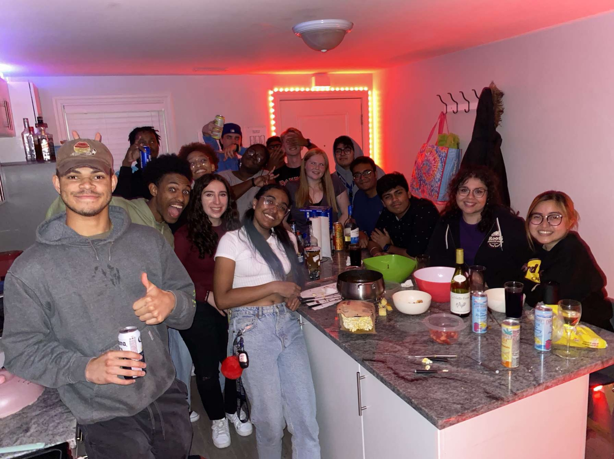
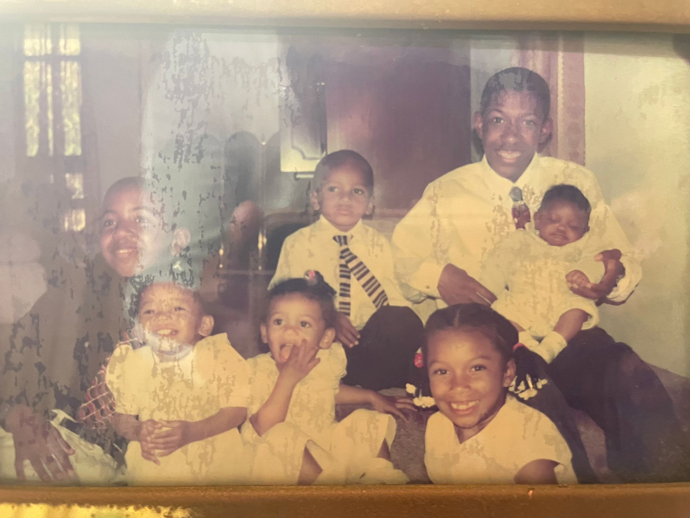
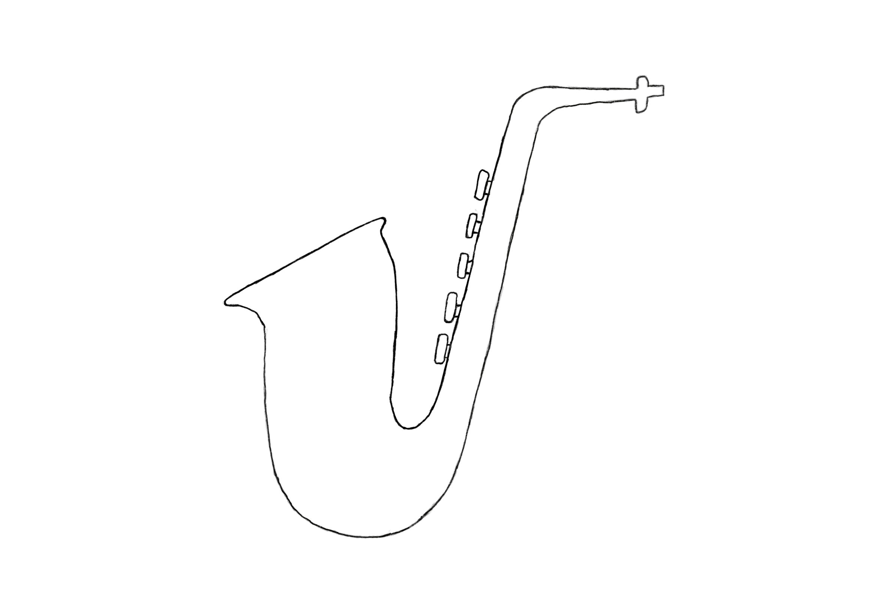
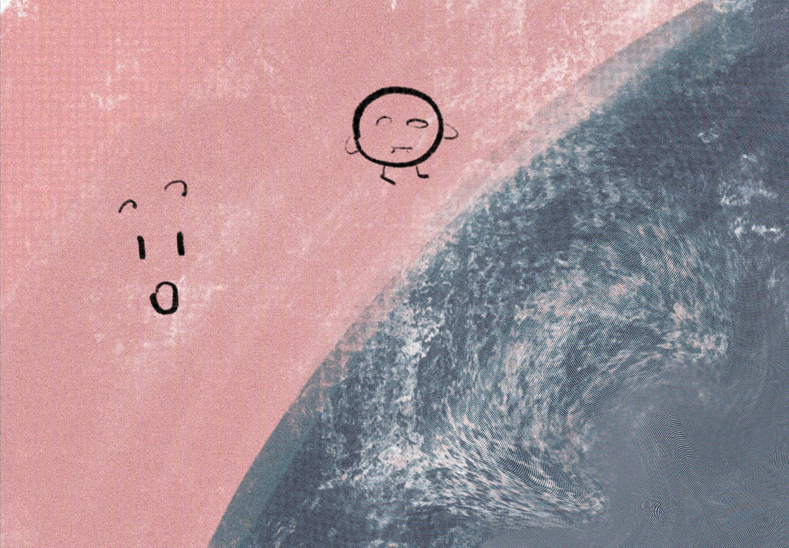
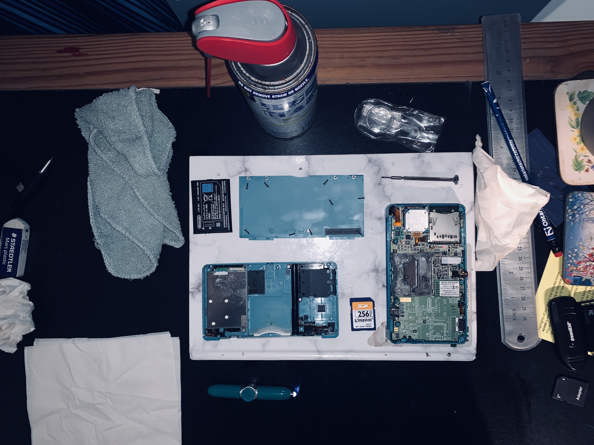

Welcome to my first Website. My name is Samuel Brangman and on this website I have numerous things to offer. My schedule this term is pretty relaxed. I only have four courses and I feel I can handle all of them so far.

I was born and raised in a small, beautiful island in the Atlantic Ocean. I am proud to be a Bermudian, studying abroad. Growing up I never had any inclination for working with computers. We didn’t have a house computer in my childhood home, nor did I have my own until I was sixteen. The first time I was introduced to the world of IT, was in my middle school computer science class (surprising, I know). Even then, my class wasn’t very hands on, so I came to university with zero programming practice. I was originally not even going to university for the program I am enrolled in currently. I was due to be in the mechatronics program. If it weren’t for the university representative talking to me about better options, I wouldn’t be where I am today. {I am the baby in this photo]

I have been playing music my whole life. Music is something that runs in my family. Both of my brothers grew up learning the organ; I wish that could’ve been me too. I instead went a louder route. My instrument of choice is drums through and through. I have been playing drums since I was 11 and never looked back. At my school, there were a plethora of bands and groups and as I was progressing through school, I found myself in every group for my penultimate year performance (minus 1, drums and string orchestra don’t really work together). I ended up receiving a reward for my musical prowess and my name is memorialized in stone in my high school. My favourite of all the bands was the Jazz Band, as we would get paid performances outside of school and it really challenged my musical skills. Now, I am learning piano, as a way to help with my theoretical music knowledge and I even practice on campus.

I have been doing Art since I was a young child, doing scribbles and sketches on any bit of spare paper I could get my hands on. It wasn’t until I was able to take art in high school in combination with the inspiration of anime that I start to see my art improve. I was around fifteen when I got my first sketch book, and it would go everywhere that I went. When I’d be at parties or any social event, I had a reading novel and my sketch book. I would practice my drawings of real-life people and understand how things in real life looked. I got too attached to my art style though, and I didn’t take to painting as a medium which I now look back on as a mistake. Now I have taken to digital art a bit more and need to work on my more rudimentary painting ideas. I won’t let it stop me from advancing my art to the best it can be.

I have an interesting relationship with my hobbies. I feel like I can dive into one, cutting into hours at a time, non-stop. The only issue is that after a couple of weeks, I feel like I have no energy to do it anymore, and I move onto the next hobby. I love to fence and do archery. I read novels as well as historical analyses. I am learning Scottish Gaelic and Japanese. I picked up chess this year and I have achieved a rapid rating of 1200 in the past six months. On top of this, I also picked up console repair this past summer, as I was tired of my old video game console not working. I have signed up for the men’s badminton doubles in the school as I used to play in high school. On top of all that, I am also writing a novel. There are so many things, that I don’t have time to do them all.
I have had a fair bit of work experience since I’ve started university. In the summer of 2021, I was interning under the head of IT at an insurance company. That summer I learned a lot about Linux and windows operating systems. I was walked through virtual machines and the idea of cloning machines. This past summer, I learned more about hacking using my kali Linux distro. I hacked into my first website, and I had a lot of person-to-person networking. I still have a long way to go, but I already feel comfortable using Linux and understanding the real-life applications of virtual machines.